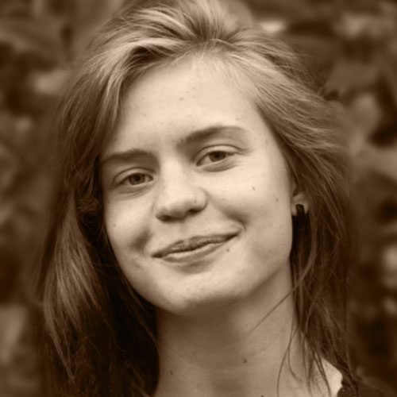

Vi har brug for din hjælp!
Giv ROD-filmen en cash-julegave, så den kan komme på nettet!
På ROD 2015 blev der lavet en film om ROD-stævnet og dets historie. Nogle af jer har måske allerede set den til visningerne i København eller Kolding. Filmen bærer titlen "ROD — Folkemusikken lever". Fordi vi bruger copyrightet musik i filmen, kan vi først gøre den tilgængelig online, når NCB (Nordisk Copyright Bureau) har modtaget 4.893,76 kr. Derudover er der et underskud på leje af lokale til premieren på filmen i København på 1.625,00 kr (det kostede 2.755,00 kr). Dette beløber sig i alt til 6.518,76 bobs – penge, som det desværre ikke var budgetteret med på ROD 2015. Men håbet er LANGT fra ude! Vi har en plan:
Vi crowdfunder lortet. Hjælp os med at muliggøre ROD-filmen ved at MobilePay’e en julegave til 6166 0929. Hvis alle i hele Danmark gav en øre, så havde vi allerede ti gange for mange penge! … men hvis nu alle på ROD 2015 gav en tier, så var vi faktisk et ret langt stykke af vejen!
MobilePay til 6166 0929
Vi offentliggør her på hjemmesiden og kommenterer på opslagene på Facebook hver dag kl 12, hvor mange penge vi er nået op på. Du kan jo overveje lige at lave en kommentar på Face, så får du et lille rødt ettal og et nænsomt vibrato i bukselommen når der sker noget her i tråden. Når vi når de hellige 6.518,76 kr, annoncerer vi det naturligvis også her på siden og fjerner telefonnummeret
Hvis du vil være sikker på at få set filmen når vi har nået målet, så skriv dit navn og emailadresse ind her (https://goo.gl/6F58nx), så sender vi dig et link per email. Alle der har givet et bidrag får et anerkendende nik i teksten under videoen, det lover vi – altså med mindre man lige skriver "anonym" i beskeden inde i MobilePay (så kommer du bare med i aftenbønnen). Hvis du er gammeldags eller bare svensk, så kan du SMS'e til samme nummer, så får du kontoinformation tilsendt. Det kan du så skrive af på et stykke pergament og tage med ned i banken sammen med din bankbog, så kan de hjælpe dig med at foretage en overførsel dernede.
ROD er et årligt folkemusikstævne for unge mellem 15 og 25 år afholdt i påsken. Mere info om stævnet her: www.rodfolk.dk.
Kærlig Hilsen ROD Arbejdsgruppen 2015
Indsamlet 12-12-2015: 1.000,00 kr
Ansvarlige for indsamlingen

Rune Øster Mortensen
rune.om@rodfolk.dk
